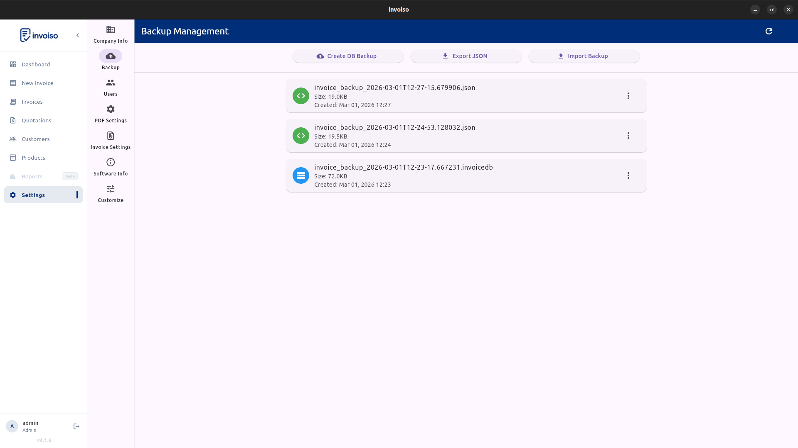

Most invoicing software ships for Windows and macOS first — Linux gets an afterthought, if it gets anything at all beyond a browser tab pointed at someone else's server. That's a real problem if you run Ubuntu, Debian, Fedora, or Mint and want an actual desktop app: no subscription, no forced account, and no invoice data sitting on a vendor's cloud. Here's what to check before picking Linux invoice software, and how Invoiso covers each point.
Package format and distro support
Two formats cover almost every Linux desktop. A DEB package installs through your system package manager and adds a normal entry to your app launcher — Invoiso ships officially tested DEB builds for Ubuntu 22.04 LTS and 24.04 LTS. An AppImage is a single self-contained executable that runs on virtually any 64-bit distribution — Fedora, Debian, Linux Mint, Pop!_OS, elementary OS, Zorin, MX Linux, Arch-based builds — with no package manager involved and no root access needed. Rule of thumb: DEB on Ubuntu or Debian for menu integration, AppImage everywhere else or if you just want to try the app without installing anything system-wide.
Installing on Ubuntu or Debian (DEB)
The fastest route is the install script — it detects your Ubuntu version, pulls the matching release from GitHub, and installs it with apt:
curl -fsSL https://invoiso.co.in/install.sh | bash -s -- --deb
Prefer doing it by hand? Grab the .deb file from the downloads page and run sudo dpkg -i invoiso_*.deb in a terminal. Either way you end up with a normal desktop entry — no PPA to add, no snap store account required.
Installing via AppImage (any distro)
On Fedora, Arch, Mint, or anything that isn't Ubuntu, use the AppImage build instead:
curl -fsSL https://invoiso.co.in/install.sh | bash -s -- --appimage
Or download Invoiso-x.x.x-x86_64.AppImage manually, make it executable with chmod +x Invoiso-*.AppImage, and run it by double-clicking in your file manager or with ./Invoiso-*.AppImage from a terminal. No sudo prompt, no dependencies to chase, no system files touched.
PDF invoice export
Whatever software you pick, test the actual PDF output before committing your workflow — not just the on-screen preview. Open a real generated PDF, check it prints cleanly on A4, and confirm your logo, GSTIN, and tax breakdown all render the way you expect. Invoiso renders the PDF locally on your machine using the same engine on every distro — no server round-trip, no queue to wait on, no "download link expired" to chase later.

Backup and restore
Offline software puts you in full control of your data, but that control comes with responsibility — there's no cloud provider quietly backing up your database in the background. Invoiso stores its data locally under ~/.local/share/invoiso/ on Linux, and the app includes a one-click backup and restore screen so you can export your entire database to an external drive, a synced folder, or a USB stick on whatever schedule suits you. Restoring is just as direct: point the app at a backup file, and moving to a new machine takes minutes instead of a support ticket.

Tax and currency fields
If you invoice Indian customers, confirm the software has native GSTIN, HSN/SAC code, and CGST/SGST/IGST fields — bolting tax compliance onto a spreadsheet after the fact is a headache nobody wants. Invoiso includes all of these by default, plus configurable tax rates per product. Invoicing internationally instead? Check for multi-currency support and template flexibility so the PDF matches what your client actually expects to receive.
Why offline matters on Linux
Linux users tend to run offline-first software by habit — it's part of why the platform appeals to freelancers, developers, and small shop owners in the first place. Offline invoice software means your customer list, pricing, and invoice history live in a file you control, not a database you're renting access to. No subscription to cancel, no account to lose, no internet connection required at a market stall or a client site with patchy wifi. Invoiso is free and open source for exactly this reason — the source is public on GitHub, and there's no premium tier gating core billing features.
Invoiso provides Linux builds (DEB and AppImage) and offline PDF billing with GST-ready fields. See the invoice software for Linux page or download Invoiso.